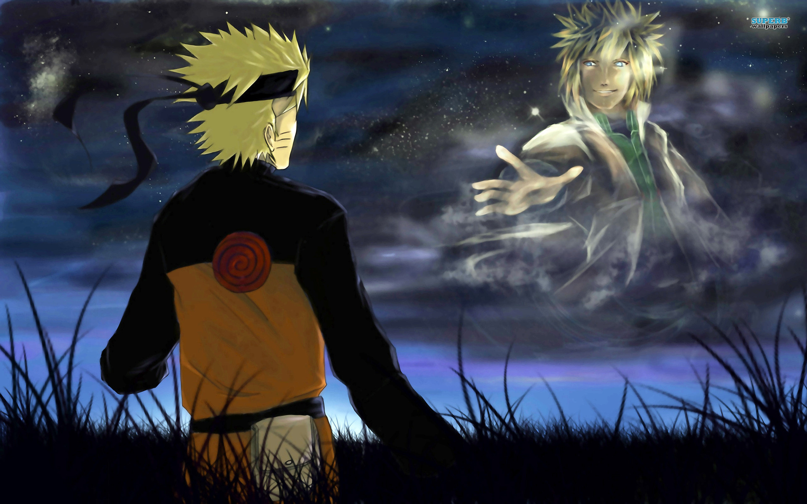

”只要有树叶飞舞的地方，火就会燃烧，火的影子会照耀着村子，然后新的树叶会再次萌芽。”
——猿飞日斩

“你是沐浴阳光的木叶，我是埋在土中的黑暗。”
——志村团藏
”人，只有在保护最重要的人的时候，才会变得坚强。”
——水无月白
“正因为有失败，才能再次坚强地站起来面对，我认为这种坚强才是真正的强大。”
——日向雏田
——迈特凯
“人的一生就像一本书，只有通过努力才能让这本书更加精彩。”
——千手纲手
”只要有树叶飞舞的地方，火就会燃烧，火的影子会照耀着村子，然后新的树叶会再次萌芽。” ——猿飞日斩 |
|
“你是沐浴阳光的木叶，我是埋在土中的黑暗。” ——志村团藏 |
|  |
”人，只有在保护最重要的人的时候，才会变得坚强。” ——水无月白 |
“正因为有失败，才能再次坚强地站起来面对，我认为这种坚强才是真正的强大。” ——日向雏田 |
|
——迈特凯 |
“人的一生就像一本书，只有通过努力才能让这本书更加精彩。” ——千手纲手 |
| ——qouting from 知乎 |